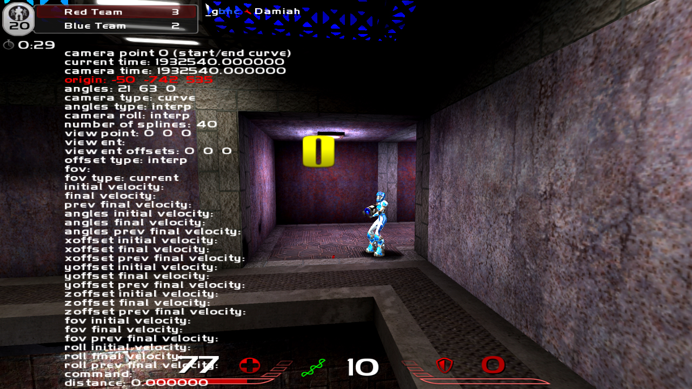
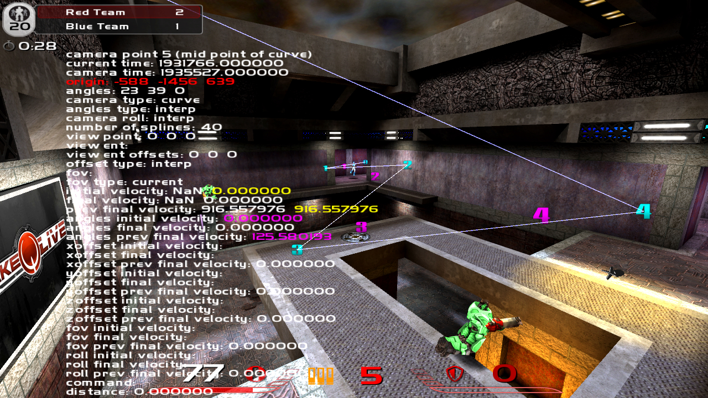

Russian WolfCamQL Guide by Legless & Salamatiqus
О, WolfCam!
В старые добрые времена, когда Дум 3 был одной из самых ожидаемых игр, в стане Quake 3 Arena существовала программа для мувимейкинга. Это программа — легенда, и имя ей — Quake 3 Movie Maker's Edition (q3mme).
Прошли годы, Кармак решил возродить старушку Арену и скрестил её с бессмертным Интернетом и его Веб-браузерами. Пока он и его команда обновляли, меняли, добавляли разный контент в их воскрешенную игру, недалеко от них, в стане ванильщиков допиливали код Quake 3 Arena Point Release 1.32 и довели его до неоффициального 1.36. Они известны, их чадо зовется ioquake3.
И вот, в один прекрасный день один прекрасный человек сделал WolfCamQL — изначально модифицированный ioquake для просмотра демо-файлов без установленного Quake Live, а сейчас — полноценный инструмент для муви-мейкинга, разросшийся сейчас до версии 9.2. Пока что это единственная программа, решившая продолжить путь q3mme в стане Quake Live.
Он поддерживает 73-й протокол (а с версии 9.0 — ещё и обратный 68-й), скрипты, совместимые с q3mme и кучу всего, нужного и не очень для создания полноценного игрового видео.
Установка
Установка этой замечательной программы необычаяно проста. Для неё нужно только лишь скачать последнюю версию (на данный момент это WolfCam 9.2) и распаковать её куда-нибудь.
После чего нужно скопировать из папки QuakeLive все паки. Для этого переходим в:
- Vista/7/8:
%AppData%\..\LocalLow\id Software\quakelive\baseq3 - XP:
%appdata%\id Software\quakelive\baseq3 - Linux:
~/.quakelive/quakelive/baseq3/ - OSX:
~/Library/Application/Support/Quakelive/baseq3/
Базовая настройка
По-умолчанию WolfCam снимает видео на диск C:\, что бы это исправить, необходимо запускать его с другими настройками. Для этого нужно создать файл *.bat, где написать:
start путь_к_вульфкаму\wolfcamql.exe +set fs_homepath "путь_к_вульфкаму"
После этого WolfCam будет сохрнять видео и скриншоты указанную директорию (в данном случае туда же, где лежит его exe-файл) в папки wolfcamql/videos/ и wolfcamql/screenshots/ соответственно. Запускать програму нужно будет именно этим файлом.
Использование для просмотра демо
Управление временем
Съёмка видео
Перед съёмкой видео необходимо настройть количество FPS (кадров в секунду), делается это командой
/cl_aviFrameRate fps
где fps — любое число от 1 до 1000.
Сама же запись видео производится командой
/video [params]
где params — параметры формата выходного видео. Возможные варианты вывода изобржения: png, tga, jpeg, avi, avins. Первые три на выходе дают секвенцию — последовательность файлов по одному на кадр. Два последних — один видеофайл в формате losless (несжатый, т.е., без потери качества) avi, содержащий все файлы сразу. Различие avi и avins в том, что последний не пишет звук в avi-файл.
Добавить к снятому видео звук можно так же просто: всего лишь добавив wav к параметрам записи, например
/video avi wav
Продвинутый захват (фрикамминг, переключение PoV-ов)
Кроме обычной съёмки WolfCam даёт возможность летать по карте как спектатор. Команда /freecam (по-умолчанию забиндена на Enter) включает и выключает режим фрикамминга, команда /cg_freecam_noclip 1|0 включает/выключает прохождение камеры сквозь стены.
Кроме этого существует возможность смотреть демку от лица других игроков: сначала нужно узнать id игрока используя команду

/players
Вывод этой команды примерно такой:
X 00 Cypher
И для просмотре демки от другого лица остается лишь выполнить команду
X 01 Cooller
X 02 FanJibo/follow номер_игрока
Продвинутые техники создания камер
 Кроме возможности просто полетать камерой по карте (управляя её дрожжащей рукой), управление полётом камеры можно повесить на WolfCam, задав только нужные ключевые точки. В свою очередь програма красиво интерполирует полёт по времени.
Для этого нужно, во-первых, перейти в режим фрикамминга, после чего создать первую точку пути, вызвав команду
/addcamerapoint

/cg_drawCameraPointInfo 1
/cg_drawCameraPath 1
Проиграть полученный путь можно с помощью команды /playcamera или просто перейдя ко времени начала этого пути.
Для удаления пути нужно использовать команду
/clearcamerapoints
Продвинутые пути
...
Продвинутая настройка
Нестандартные шрифты и модели
...
Depth of Field
Depth of Field (а по-русски "глубна резкости") — это, по сути, размытие всех объектов, которые находятся дальше определённого расстояния от точки фокуса камеры. Поддержка этого отличного эффекта в вульфкаме заключается всего в одной команде — /mme_saveDepth 1, которая включает запись второго видеоряда, включающего в себя Z-Buffer (буфер глубины, интенсивность пикселей которого зависит от расстояния до камеры) в том же формате, что и основное видео (секвенция картинок или avi-файл).
После захвата полученное видео необходимо обработать для, собственно, включения DoF. Я покажу это на примере Adobe After Effects.
Делается это очень просто: берём оба видео и создаём новую композицию с ними так, что бы видео с depth-буффером было снизу.

К верхнему, цветному видео применяем эффект Lens Blur, указав в качестве параметра Depth Map Layer слой с Z-буффером.

При необходимости, регулруем фокус параметром Blur Focal Distance, силу размытия — Iris Radius и форму боке — Iris Shape.
Встроенный motion blur
...
Bloom и цветокоррекция
...
Работа с демо-файлами
Нарезка демо-файлов
WolfCam позволяет вырезать небольшой кусок из большого демо-файла используя команду /record во время просмотра. Для удобства желательно использовать следующие бинды:
/bind n "pause; record"
/bind m "stoprecord"
После нажатия клавиши m проигрывание демо станет на паузу, а после возобновления пригрывания начнёт записываться новый демо-файл, содержащий нужный кусок.
Использование демо 68-го протокола (Quake 3 Arena)
Начиная с версии 9.0 в Вульфкаме появилась поддержка протокола Quake 3 Arena. Для её включения нужно скопировать нужные паки Q3 в директорию /baseq3/ и запустить WolfCam следующим образом (см. раздел "Базовая настройка"):
wolfcamql.exe +set protocol 68
FX-подсистема
...
Небольшие хитрости
...
FAQ
...
Ссылки
...
Послесловие
...